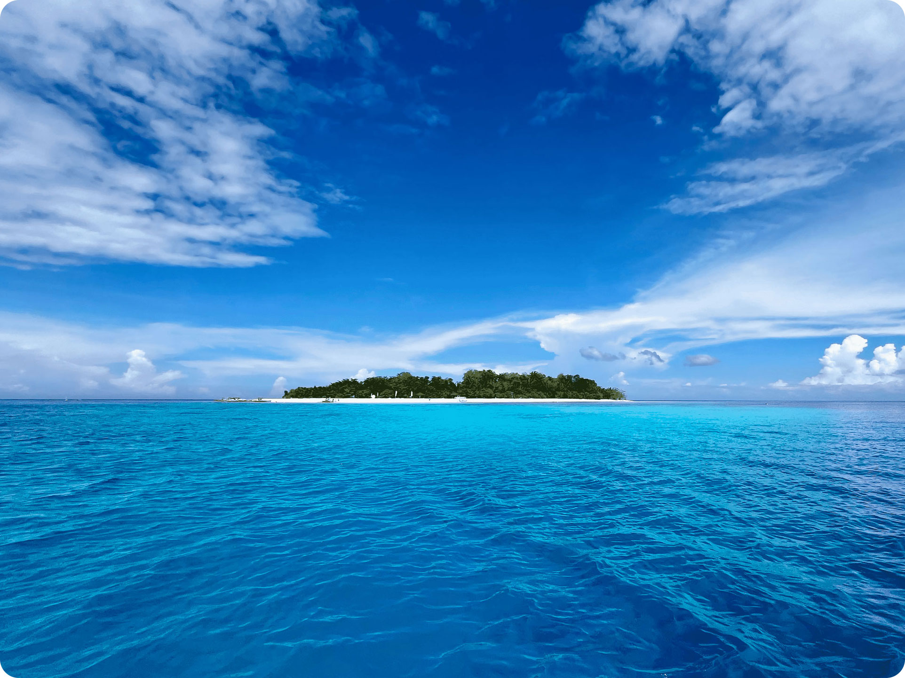

Most Popular
Mantigue Island
Mantigue Island Marine Sanctuary is Camiguin's crown jewel. This tiny island is surrounded by a vibrant reef that is home to an extraordinary population of green sea turtles. On a single dive, it's common to encounter 5–10 turtles grazing on the reef.
The gentle slope of the reef makes it perfect for divers of all levels, while the rich biodiversity — from schooling jackfish and barracuda to colorful nudibranchs and anemone gardens — keeps experienced divers coming back.
What You'll See
🐢 Green Sea Turtles
🐟 Jackfish Schools
🐠 Nudibranchs
🐡 Barracuda
🪸 Anemone Garden
🦑 Cuttlefish